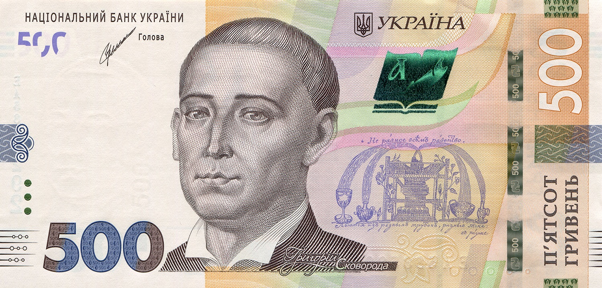

Історія національної валюти України
Офіційною національною валютою України є гривня. Її назва походить від слова «гривна», яке за часів Київської Русі позначало нашийну прикрасу.
Вже у VIII-ІХ століттях під час торговельних операцій і сплати данини гривна використовувалась як міра ваги і лічби. Пізніше, у різні історичні періоди, слово «гривня» неодноразово змінювало своє значення.
Карбування монет у Х-ХІІ століттях
На українських землях карбування власної валюти, златників та срібляників, започаткував київський князь Володимир Великий. Ці монети – перші державні документи, що зберегли зображення тризуба – знака київських князів.
На лицьовому боці монети зображено князя, який сидить на престолі, тризуб і напис "ВЛАДИМИР НА СТОЛЕ". На зворотному боці – карбовано лик Ісуса Христа і напис "А СЕ ЕГО ЗЛАТО".

На відміну від країн Заходу, які починали карбування власних монет, копіюючи римські, з чужими портретами та написами, златники і срібляники містять виключно давньоруські написи і зображення своїх князів.

Карбування срібних монет продовжили Святополк Окаянний, Ярослав та Олег Тмутараканський.
На шляху до незалежної української держави
У XII-XIV століттях Київська Русь переживала період феодальної роздробленості, а карбування монет припинилося. Роль грошей виконували переважно срібні злитки, що називалися "гривнями".
Після тривалої перерви у середині XIV століття на українських землях відродився не тільки монетний обіг, а й ненадовго карбування монет – червоноруських півгрошей у Львові і срібняків Володимира Ольгердовича у Києві. Гривні поступово зникли з обігу, перетворившись на грошово-лічильне поняття.
Пізніше відродити власне карбування монет планував Богдан Хмельницький. Ще від початку Визвольної війни 1648-1654 років гетьман прагнув проводити самостійну фінансову політику, вважаючи її однією з основних ознак державності. державності. Чи вдалося гетьману реалізувати задум, не знаємо, адже писемні згадки до цього часу не підтверджені археологічними знахідками. державності.
Українська революція 1917-1921 років
У часи національно-визвольних змагань у 1917-1921 роках велике значення у розбудові самостійної і суверенної Української держави мало впровадження національної валюти й створення незалежної банківської системи.
22 грудня 1917 року Центральна Рада прийняла закон про перетворення Київської контори Держбанку Росії на Український державний банк. Його першим директором став Михайло Кривецький. Саме він підписав першу банкноту самостійної Української держави – державний кредитовий білет вартістю 100 карбованців, який було емітовано 5 січня 1918 року. Його вартість дорівнювала 17,424 долі щирого золота (1 доля = 0,044 г золота).
Художник Георгій Нарбут, проектуючи ескіз банкноти у 100 карбованців, звернув увагу на тризуб як знак, характерний для найдавніших національних грошей України – златників та срібляків князя Володимира, і вмонтував його до композиції ескізу.
А 1 березня 1918 року Центральна Рада прийняла закон про запровадження нової грошової одиниці – гривні, яка поділялася на 100 шагів і дорівнювала 1/2 карбованця.

Гетьман Павло Скоропадський, прийшовши до влади у квітні 1918 року, відновив як основну грошову одиницю Української Держави карбованець, що поділявся на 200 шагів. Було підготовлено ескізи банкнот вартістю 10, 25, 50, 100, 250 та 1000 карбованців.

Після переходу влади в Україні у грудні 1918 року до рук Директорії на чолі з Володимиром Винниченком та Симоном Петлюрою основною грошовою одиницею відновленої УНР знову проголошено гривню. Усього за 1917-1921 роки в обіг введено 24 паперових грошових знаки.
Бофони
Тривала боротьба вояків ОУН-УПА за незалежність України вимагала постійної допомоги від населення. У ті часи розраховувалися "бофонами" – розраховувалися "бофонами" – однобічними (рідше двобічними) грошовими документами з національною символікою та символікою ОУН і УПА. розраховувалися "бофонами" –
Загалом, за 1939-1954 роки виготовлено близько 500 різновидів бофонів, які перебували у вжитку щонайменше у дванадцяти областях України та Білорусі, а також частково на території Австрії, Німеччини, Польщі, Словаччини та Чехії.
Творцем найвідомішої серії бофонів, "Волинської", створеної у 1945-1946 роках, став один із найталановитіших графіків ХХ століття – Ніл Хасевич.
"Гривня – національна валюта незалежної України"
Із здобуттям Україною незалежності надзвичайно важливим було створення національної грошової системи. Уже 10 січня 1992 року Національний банк ввів в обіг купони багаторазового використання. Правову підтримку купонокарбованці отримали 20 березня 1991 року з прийняттям Закону України "Про банки і банківську діяльність".
Деякий час одночасно в обігу перебували і рублі, і купонокарбованці. А з 12 листопада 1992 року єдиним засобом платежу України у готівковому і безготівковому обігу став український карбованець.
З 2 по 16 вересня 1996 року в Україні відбулася грошова реформа, у наслідок якої національною валютою стала гривня. Національний банк України ввів банкноти номіналом 1, 2, 5, 10, 20, 50 і 100 гривень.

Ще 1992 року розпочато роботу над гривнею. Перші банкноти за дизайном художників Василя Лопати і Бориса Максимова надруковані у Канаді та Великобританії.
Для назви розмінної монети пропонували назви "сотий", "резана", але зрештою надали перевагу "копійці". Спершу вона карбувалася на Луганському верстатобудівному заводі та частково на монетному дворі Італії. Випущено номінали вартістю 1, 2, 5, 10, 25 і 50 копійок.
З 1994 року в Україні відкрито Банкнотну фабрику, у квітні 1998 року засновано Монетний двір. Тепер українська гривня друкується за найсучаснішими світовими технологіями, а віднедавна – з використанням українського льону.
